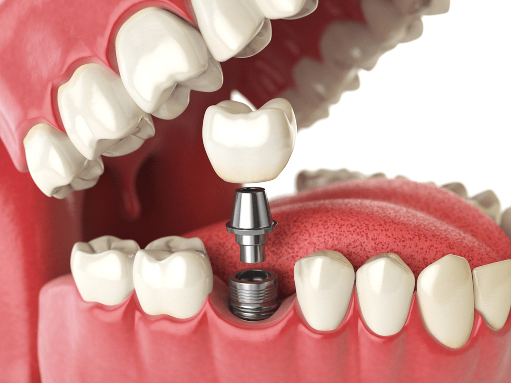
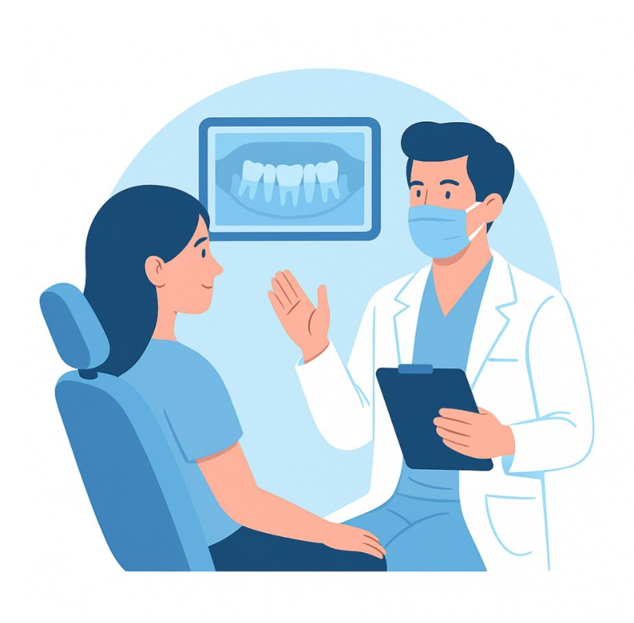
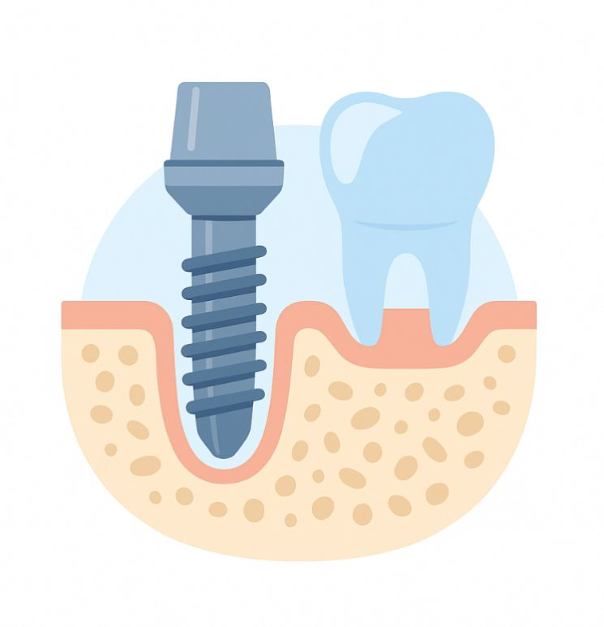
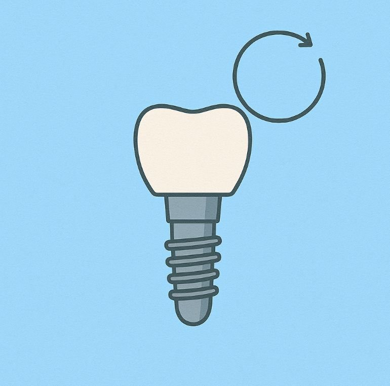
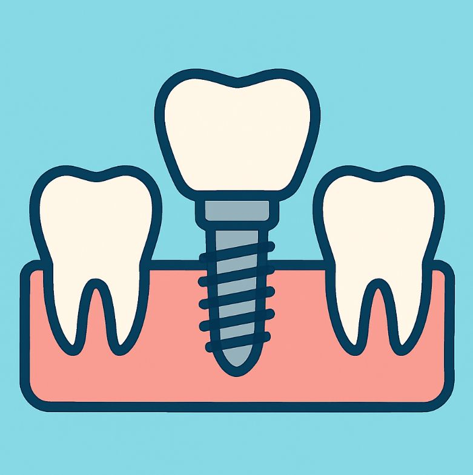

Gli impianti dentali sono la soluzione ideale per sostituire i denti mancanti: garantiscono risultati duraturi e naturali, proteggendo la salute della tua bocca.





No — anche i pazienti oltre i 70 anni possono ricevere impianti, se la struttura ossea è sana.
No! Con l’anestesia locale moderna e la nostra esperienza, non sentirai dolore durante l’inserimento.
L’inserimento di un singolo impianto può richiedere meno di 20 minuti. La guarigione dura dai 3 ai 6 mesi.
I pazienti con diabete non controllato o gravi problemi ossei devono prima effettuare valutazioni aggiuntive.
Con una corretta igiene e controlli regolari, un impianto dentale può durare 20 anni o più.
Lascia che ti restituiamo il sorriso con le soluzioni di impianti dentali più avanzate.
Prenota oraIndirizzo: Rruga Him Kolli, Tirana, Albania
Telefono: +355 69 204 0130
Scrivici via e-mail oppure prenota subito una visita.